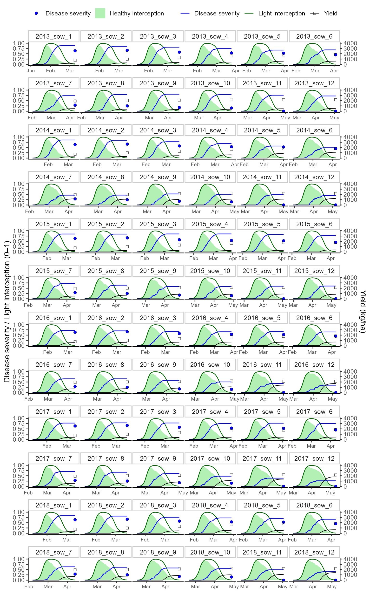

Wheat blast on wheat in Brazil
Source:vignettes/case-study-brazil-wheat-blast.Rmd
case-study-brazil-wheat-blast.Rmd🎯 Goal
This vignette demonstrates how to use FraNchEstYN to estimate wheat yield losses from wheat head blast in Brazil.
The workflow follows three progressive steps:
- Disease calibration: fit epidemiological parameters on a subset of planting periods.
- Parameter averaging: derive robust mean disease parameters across planting periods.
- Validation: apply averaged disease parameters to all planting periods, and compare simulated vs observed disease severity and yield.
We start from an already published Brazil wheat parameter set (Santos et al. 2023), use open access EPAMIG experimental data across 12 sowing dates × 6 years, and weather from NASA POWER.
We use open access EPAMIG experiments (12 sowing dates × 6 years for cultivar BRILHANTE), weather data from NASA POWER, and a published Brazil wheat parameter set (Santos et al. 2023).
📦 Packages
We load FraNchEstYN plus helper libraries for wrangling, visualization, and reproducible tables.
📥 Data loading
We use three sources:
- weather_data: daily NASA POWER weather for Empresa de Pesquisa Agropecuária de Minas Gerais (EPAMIG) in the municipality of Patos de Minas, in the state of Minas Gerais, Brazil (18°31′04.0”S, 46°26′25.0”W)
- management_data: basic agronomic metadata (crop, sowing DOY, etc.)
- reference_data: measured yields and disease severity for one cultivar (BRILHANTE), six years and 12 sowing dates
We rely on NASAPOWER package (maintained by Adam Sparks 🙏) to directly query daily weather data.
🛰 NASA Power data
We request maximum and minimum temperature and precipitation from 2011–2020. Data are tagged with location and date components to simplify later filtering.
# --- Load libraries
library(nasapower)
library(dplyr)
library(lubridate)
# --- Retrieve daily data from NASA POWER
weather_data <- nasapower::get_power(
community = "ag",
lonlat = c(-46.4403, -18.5178),
dates = c("2011-01-01", "2020-12-31"),
temporal_api = "daily",
pars = c("T2M_MAX", "T2M_MIN", "PRECTOTCORR")
) %>%
rename(
TMAX = T2M_MAX,
TMIN = T2M_MIN,
RAIN = PRECTOTCORR,
DATE = YYYYMMDD
) %>%
mutate(
year = year(DATE),
month = month(DATE),
day = day(DATE),
Site = "Sertaozinho",
lat = -18.5178
) %>%
select(Site, TMAX, TMIN, RAIN, year, month, day, lat)
head(weather_data)
#> ────────────────────────────────────────────────────────────────────────────────
#> ────────────────────────────────────────────────────────────────────────────────
#> ────────────────────────────────────────────────────────────────────────────────
#> # A tibble: 6 × 8
#> Site TMAX TMIN RAIN year month day lat
#> <chr> <dbl> <dbl> <dbl> <dbl> <dbl> <int> <dbl>
#> 1 Sertaozinho 24.7 20.0 26.7 2011 1 1 -18.5
#> 2 Sertaozinho 23.6 19.2 22.0 2011 1 2 -18.5
#> 3 Sertaozinho 24.3 18.9 43.0 2011 1 3 -18.5
#> 4 Sertaozinho 24.9 19.0 15.5 2011 1 4 -18.5
#> 5 Sertaozinho 26.2 18.9 9.92 2011 1 5 -18.5
#> 6 Sertaozinho 26.3 18.4 28.0 2011 1 6 -18.5📑 Management and reference datasets
For convenience, the package already includes the management and reference datasets, derived from the open-access EPAMIG wheat trials (cultivar BRILHANTE, multiple sowing dates and years). The original dataset is publicly available at OSF repository
A preview of their structure is shown in the vignette.| year | variety | planting_period | Disease | yieldActual | site | doy | fint |
|---|---|---|---|---|---|---|---|
| 2013 | BRILHANTE | 1 | NA | NA | Sertaozinho | 92 | 1 |
| 2013 | BRILHANTE | 2 | NA | NA | Sertaozinho | 100 | 1 |
| 2013 | BRILHANTE | 3 | NA | NA | Sertaozinho | 107 | 1 |
| 2013 | BRILHANTE | 4 | NA | NA | Sertaozinho | 116 | 1 |
| 2013 | BRILHANTE | 5 | NA | NA | Sertaozinho | 124 | 1 |
| 2013 | BRILHANTE | 6 | NA | NA | Sertaozinho | 131 | 1 |
| crop | variety | sowingDOY | year | planting_period |
|---|---|---|---|---|
| wheat | BRILHANTE | 49 | 2013 | 1 |
| wheat | BRILHANTE | 56 | 2013 | 2 |
| wheat | BRILHANTE | 63 | 2013 | 3 |
| wheat | BRILHANTE | 70 | 2013 | 4 |
| wheat | BRILHANTE | 77 | 2013 | 5 |
| wheat | BRILHANTE | 84 | 2013 | 6 |
🦠 Step 1 – Disease calibration on selected sowing dates
We start from already optimized crop parameters and disable crop calibration so only disease parameters are adjusted.
👉 The idea is:
- Select a subset of sowing dates (here planting periods 1, 3, 5, 7, 9, 11) for calibration.
- Run franchestyn separately for each planting period.
- Collect the estimated disease parameters from each run.
- Compute mean and standard deviation across experiments.
- Rebuild a consistent list-of-lists parameter set using the averaged values using the custom function in the package.
# --------------------------------------------------------------
# 📌 Step 1: Disease calibration on selected sowing dates
# --------------------------------------------------------------
# 1. Load a baseline crop parameter set for Brazil
# (already calibrated from literature, bundled as an .rds)
data("cropParameters_brazil.rda")
# 2. Disable calibration for crop parameters
# 👉 we want to calibrate ONLY the disease model
cropParameters_brazil <- FraNchEstYN::disable_all_calibration(cropParameters_brazil)
#we load default parameters for wheat blast
thisDiseaseParam<-diseaseParameters$wheat_blast
thisDiseaseParam$AssimilateSappersDamage$calibration <- F
thisDiseaseParam$AssimilateSappersDamage$value <- 0
# 3. Define the study period
start_end <- c(2011, 2020)
# 4. Choose a subset of sowing dates ("planting periods") for calibration
# These are representative experiments used to estimate disease parameters.
pps <- c(1, 3, 5, 7, 9, 11)
# Container for disease parameters from each planting period
all_parameters <- list()
# 5. Loop over each planting period in the calibration set
for (pp in pps) {
# --- Run the model ---
df <- FraNchEstYN::franchestyn(
weather_data = weather_data,
management_data = management_brazil |> filter(planting_period == pp),
reference_data = reference_brazil|> filter(planting_period == pp),
cropParameters = cropParameters_brazil,
diseaseParameters = thisDiseaseParam,
calibration = "disease", # focus calibration on epidemiology
start_end = start_end,
iterations = 555 # MCMC iterations
)
# --- Extract disease parameters from this calibration run ---
disease_df <- parameters_to_df(df$parameters$disease)
# --- Store results, tagging by planting period ---
all_parameters[[length(all_parameters) + 1]] <- disease_df %>%
mutate(planting_period = pp)
}
# 6. Merge all planting period calibrations into one dataframe
parameters_df <- dplyr::bind_rows(all_parameters, .id = "run_id")We then average across planting periods:
# 7. Summarise across planting periods
# 👉 take the mean value, plus standard deviation and sample size
param_summary <- parameters_df %>%
group_by(Parameter) %>%
summarise(
value = mean(as.numeric(Value), na.rm = TRUE),
sd_value = sd(as.numeric(Value), na.rm = TRUE),
n = sum(!is.na(Value)),
.groups = "drop"
)
# 8. Rebuild a parameter list suitable for FraNchEstYN
# 👉 use the averaged values, with a ±20% range
calibDisease <- FraNchEstYN::df_to_parameters(param_summary, range_pct = 0.2)| Parameter | Value | |
|---|---|---|
| AssimilateSappersDamage | AssimilateSappersDamage | 0.0000000 |
| CyclePercentageOnset | CyclePercentageOnset | 21.0558375 |
| DryCriticalInterruption | DryCriticalInterruption | 32.2561801 |
| HydroThermalTimeOnset | HydroThermalTimeOnset | 11.1405244 |
| IsSplashBorne | IsSplashBorne | 1.0000000 |
| LatencyDuration | LatencyDuration | 7.1291593 |
| LightStealerDamage | LightStealerDamage | 0.6919067 |
| OuterInoculumMax | OuterInoculumMax | 0.0559828 |
| OuterInoculumShapeParameter | OuterInoculumShapeParameter | 0.5016953 |
| OuterInoculumShapeRelease | OuterInoculumShapeRelease | 2.0000000 |
At this stage, calibDisease contains the epidemiological parameters averaged across multiple sowing dates. This reduces noise from single calibrations and provides a robust baseline for validation on the remaining experiments.
🌾 Step 2 — Batch validation
We validate the averaged parameters across all sowing periods and years.
The procedure is straightforward:
-
Loop across planting periods recorded in the
dataset.
-
Run FraNchEstYN without further calibration, using
the averaged disease parameters (
calibDisease).
-
Collect simulation outputs for each planting
period.
- Bind everything into one tibble for further analysis and plotting.
📊Step 3 — Validation against experiments
In this final step we bring together the model simulations and the
field observations from EPAMIG.
We join the simulated outputs with the observed disease severity
(DisSev) and yield per planting period, making
sure that only the last record of each experimental group retains
observed values (all intermediate time steps are set to
NA).
#> `summarise()` has grouped output by 'year', 'planting_period'. You can override
#> using the `.groups` argument.
#> Joining with `by = join_by(planting_period)`🎨Visualization
To compare simulations with experiments, we rescale yield onto the same axis (by dividing by a scaling factor) and facet the plot by year × planting experiment.
The final plot shows:
- Healthy light interception (green area)
- Simulated light interception (dark green line)
- Disease severity (blue line, points, and error bars)
- Grain yield (black line, points, and error bars, rescaled)

🌍 Interpretation and conclusion
The plot above summarizes model simulations against observed data for six years and twelve sowing dates of cultivar BRILHANTE in Brazil.
- ✅ Healthy light interception (green area) provides
the baseline without disease.
- ✅ Simulated interception (dark green line)
captures crop canopy dynamics.
- ✅ Disease severity (blue) is both simulated (line)
and observed (points with error bars).
- ✅ Yield (black) shows observed vs simulated grain yield (scaled to fit).
Overall, the calibrated disease parameters reproduce the magnitude and seasonal patterns of wheat blast epidemics. The framework highlights how integrating weather, management, and epidemiology can provide robust estimates of yield losses.
📌 Key takeaway
This vignette illustrated the full calibration–validation cycle:
-
Calibrate disease parameters on a subset of
experiments.
-
Average them into a robust epidemiological
baseline.
- Validate on independent experiments across years and sowing dates.
This workflow can be extended to other crops, pathosystems, and datasets using the same FraNchEstYN framework.